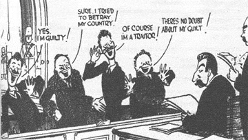

The bodies may not be stacking up like in Soviet times, but leftists in 2017 are copying Stalin’s playbook when it comes to dealing with highly dubious allegations of “rape” and “sexual assault.” Combining ideological fervor with shoddy “determinations” of guilt, SJWs are peddling fear and irrationality at every turn in trying to demonize the male gender.
Although he was a highly gifted politician and social strategist, the Soviet leader Joseph Stalin is infamous for his persecutions of millions of innocent Soviet citizens and foreigners. In order to secure his power during the 1930s, he embarked on an unprecedented policy of state-sanctioned butchering, beginning with show trials against senior Bolshevik colleagues and culminating in a more generalized pattern of extermination, known today as the Great Terror.
By the end of the 1930s, hundreds of thousands of run-of-the-mill people had been rounded up and executed, or were simply left to die through hunger, illness, or torture. Others were demoted, fired, or severely ostracized within their communities. In addition to the death toll and various forms of repression, what most characterized the Great Terror was the remarkable paranoia it cultivated in the minds of nearly every resident of the Soviet Union. “Will I be next?” thought tens of millions of everyday Russians, Ukrainians, and members of other Soviet nationalities.
In most cases, serious physical harm and death do not befall those spuriously accused of “rape” or “sexual assault” in the West today. Notwithstanding this, the paranoia and many of the methodologies of Stalin’s Great Terror are replicated in instances of “abusers” targeted by SJWs and their powerful enablers.
Here are the very unfortunate commonalities:
1. There are quotas for “convictions”
Senior British prosecutor Alison Saunders has led the charge for more rape convictions.
Sound convictions are far from a focus for SJWs, similar to the heyday of the Great Terror. In fact, the reverse is often true. What matters is the number of convictions, however unethically they are procured. To achieve this, SJWs start by saying things like, “Only 5% of rapes are ever reported.” Of course, an unreported “rape” is not a rape in reality because we have no idea whether it happened or not. That is irrelevant to SJWs; they’re all rapes for those who want more convictions.
Worst of all, this emphasis has now reached the highest echelons of our legal systems. In the United Kingdom, which we can assess more easily than the 50 states and countless counties of the United States, the Crown Prosecution Service (CPS) has tried to “improve” conviction rates for years. With comparatively few real rapes and sexual assaults, walking past a woman in a London train station is enough for the state to chase after you.
Because most Soviet citizens and others residing in the Soviet Union were preoccupied with just surviving, Stalin and his henchmen had to literally search for people to take the place of largely imaginary dissidents, spies, and saboteurs. Those in the West finding themselves prosecuted over bogus claims of “rape” or “sexual assault” may not face a firing squad today, but the hunt for new “criminals” continues unabated.
2. Actual evidence is merely an inconvenience to be avoided

Forced confessions and a lack of objective evidence were the hallmarks of Stalin’s show trials and the Great Terror. A lack of objective evidence is a defining feature of most rape trials today, too.
Unsubstantiated or plain anonymous denunciations were the order of the day throughout Stalin’s Great Terror. The same can be said of contemporary “rape culture” witch-hunts. Beyond college campuses, which provide archetypal examples of how “rape” hysteria operates, men can be harassed, hounded out of places, and even impoverished or imprisoned via anonymous rumors. Alternatively, the names of accusers are only known to a select few, with serious prison sentences awaiting anyone who reveals who they are. Moreover, alleged evidence is rarely, if ever provided, let alone verified by something close to a court.
The personal stories that illustrate this disregard for proof are nothing short of gut-wrenching. Last year, mid-level comedian Aaron Glaser found himself blacklisted from the New York City comedy scene for “sexual abuse.” His accusers, as far we know, were essentially unidentified. Many of those who vilified Glaser did so on the basis of random Facebook rants. The man’s livelihood took a massive nosedive and his Twitter account nowadays reads like a conversation with himself. He has never faced charges, as you would expect with such a poorly backed-up set of accusations. This hasn’t stopped the SJW mobs.
3. Those targeted must admit their “guilt” or face even harsher penalties
93-year-old men near their deathbed are now under attack.
The best chance of survival in either a Great Terror or a modern-day “rape” witch-hunt is to admit some kind of moral guilt or support the goals of the SJWs. Maintaining your innocence, nominally a legal right, only inflames your detractors. In the 1930s, a refusal to confess increased your chances of dying (regardless, many confessors were still executed in the end). The contemporary social climate is all about recognizing you engaged, at a minimum, in a form of sexual “misconduct” for which you should be sorry.
2017 is full of situations where apologies are forced, but one recent controversy should be singled out. Former US President George H. W. Bush has been very opportunistically accused of groping by at least two women. Besides his senility, Bush is presently stuck in a wheelchair and has issues moving his hands higher. If he did touch the buttocks of certain women, itself very debatable, the proposition that he went further and felt them up for sexual gratification is far from proven. After the groping allegations came to light, he and his spokespeople just had to apologize to the women involved. Anything less and this seriously ill man would become a pariah for rabid SJWs.
4. True believers are not spared from persecution
Sure, it might often arouse schadenfreude in us, but it is also very troubling that the obsession with “rape culture” ends up devouring many of those who have otherwise furthered the SJW cause. If anything, the gobbling up of erstwhile fellow travelers is an attempt to legitimize the witch-hunts: “See, we are so dedicated to justice that we will mete it out to our best friends!” Stalin did this repeatedly, including with his main man in the NKVD, Nikolai Yezhov (and his predecessor).
Only days ago, Vice writer Sam Kriss was bitten badly by the same political beast he had fed for years. A girl (again, pretty much anonymously) accused him of sexual misconduct and Kriss consumed his medicine without complaint. He was fired, still maintaining his SJW beliefs, like how countless victims of Stalin pledged loyalty to him even as bullets, knives, and fists ended their lives.
Though there have been enough cases of male feminists being churned out for semi-believable rape or sexual assault stories, we need to be cautious. Social justice is a mental illness at its heart. I have no doubt that many men are so infected by their leftist activism that they would sacrifice themselves for the cause, genuinely believing that they raped or sexually assaulted their accusers when they actually did not.
5. Guilt by association or group membership is commonplace
Denounce, denounce, denounce, Ben and Matt!
Just as the family members and associates of those condemned during the Great Terror suffered, those connected with people accused of “rape” or “sexual assault” face immense challenges. Some in an accused’s social circle, due to the esteem in which they are held, are harder to unseat than others. Yet all should be regarded as vulnerable. A failure to attack your own kin or buddy after a “rape” or “sexual assault” allegation can lead to problems for years.
Inasmuch as I despise the selective, self-serving politics of, say, Meryl Streep, her denunciation of her “God” Harvey Weinstein is understandable. She had to join the fray of hungry leftist cannibals, lest her career suffer, no matter how much of a privileged leftist figure she may appear to be. So, too, did Matt Damon and Ben Affleck. The dilemma for these two, however, is that they are men. Affleck especially has been in the firing line and is currently being savaged for a video of him “groping” Hilarie Burton (who seemed to love the attention back then, might I add).
There are plenty of sad stories from the non-celebrity world as well. Paul Nungesser, the man falsely accused by whacko Emma Sulkowicz, became a marked man for the rest of his education at Columbia University. Former friends attacked him and entire groups of people avoided him. If you didn’t support Emma and denounce Paul, you were apparently supporting “rape.”
Are you ready for the purge?
Condemned, poorly “convicted” men awaiting their fate.
You should be. The fallout from the Harvey Weinstein scandal could go one of two ways. The accusations and denunciations, now impacting dozens of male celebrities, plus innumerable everyday men, might exhaust themselves temporarily, as happened two years ago when the James Deen story petered out. Whilst this is the better option, a new round of media-enabled show trials will resume some time after. Let’s call this the cyclical scenario.
Perhaps, though, the “rape” and “sexual abuse” hysteria will snowball like never before, sucking in more and more unfairly attacked men. If this second, dystopian possibility is how things turn out, don’t say we didn’t warn you.
Read More: The Bill Cosby Rape Scandal Is Just Another Example Of Modern Hysteria